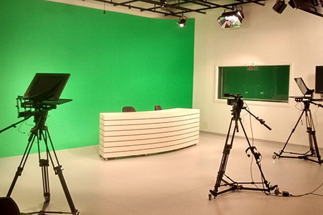

Nossa Estrutura
Design e Arquitetura:
Ambiente multiuso, composto por estações de trabalho com régua paralela, destinado ao desenvolvimento de atividades teóricas e práticas da área de criação, produção em design e arquitetura.

Topo
Comunicação e Arte
Estúdio de vídeo preparado para aulas práticas com equipamentos de luz, câmeras profissionais, microfones e teleprompter.

Topo
Gastronomia e Nutrição:
Com estrutura e equipamentos modernos, a cozinha pedagógica apresenta-se como alternativa diferenciada para alunos iniciantes ou profissionais que atuam em restaurantes, bares, lanchonetes e similares e que buscam atualização, desenvolvimento de novas habilidades e competências ou diversificação do seu portfólio de serviços.

Topo
Tecnologia da Informação:
Os laboratórios de manutenção de microcomputadores contam com a infraestrutura necessária para o aprendizado na prática alinhado à realidade do mundo do trabalho atual. A sala é climatizada, possui computadores com três níveis de detalhamento:
Kit morto – para o manuseio dos componentes;
Kit de troubleshooting – para detecção de erros e instalação de sistemas operacionais e outros softwares;
Equipamentos de pesquisa – ligados à rede educacional e com os principais aplicativos instalados, para acesso à internet e produção de documentos diversos.

Topo
Saúde e Bem-Estar:
O Senac São Miguel possui laboratório completo e moderno à disposição dos alunos dos cursos técnicos e livres nas áreas de Estética, Massoterapia e Podologia. Aliando equipamentos com tecnologia de ponta e um espaço adequado para vivência e condução de aulas práticas, a sala conta com diversas estações de estudo estruturadas de modo a garantir ao aluno o aprendizado e a vivência em situações cotidianas onde serão apoiados pelas mais modernas técnicas e ferramentas do mercado.

Topo
Beleza:
O espaço que possui 15 estações para práticas educacionais está montado com iluminação e mobiliário profissionais que garantem aos estudantes um ambiente totalmente equipado e preparado para proporcionar o desenvolvimento das competências e habilidades do profissional que atua no segmento da beleza.
As estações de atendimento contam com iluminação de camarim, cadeiras hidráulicas com encosto de cabeça e carrinhos auxiliares para acondicionar produtos, além de equipamentos que permitem simular o atendimento completo em um salão de beleza: cabelo, maquiagem, sobrancelha, esmaltação, manicure e pedicure.

Topo
Biblioteca:
Com um total de 639m² de área construída, o principal diferencial desta biblioteca para as outras unidades é que sua localização privilegia um amplo uso de sua estrutura: a biblioteca do Senac São Miguel Paulista encontra-se antes das catracas da unidade, o que a torna uma biblioteca aberta para atender todo o público do entorno.
Contando com dois pavimentos a biblioteca possui elevador acessível. Conta ainda com mesas para leitura salas de estudo, diversos espaços com puffs e poltronas nos espaços de convivência, além de computadores com acesso a internet que os frequentadores podem fazer uso

Topo
Voltar